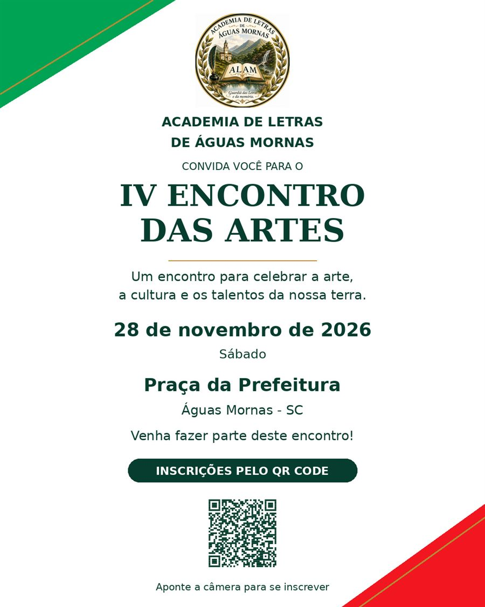
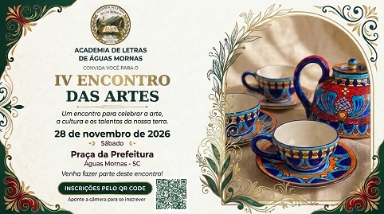

28 NOV2026 · sábado
IV Encontro das Artes
Um encontro para celebrar a arte, a cultura e os talentos da nossa terra.
Da Praça da Prefeitura aos saraus e concursos: a agenda cultural da Academia.
Agenda
Próximas datas e marcos da trajetória da Academia, do mais recente ao histórico.
Um encontro para celebrar a arte, a cultura e os talentos da nossa terra.
A ALAM integra a comissão organizadora, na Biblioteca Pública de Santa Catarina.
Participação da Academia na feira, ao lado de ANACLA, ALP, ASAL e AJEB.
Visita da presidente à Academia Cearense de Letras, em Mossoró – RN.
III edição do ciclo, realizada na Praça da Prefeitura de Águas Mornas.
1º Concurso de Poesias e Prosas da Academia.
Saraus realizados durante a pandemia, que ajudaram a projetar a Academia no cenário estadual.
Em evidência
28 de novembro de 2026 · Praça da Prefeitura — Águas Mornas, SC

Convite oficial
A peça de comunicação da quarta edição do Encontro das Artes: um encontro para celebrar a arte, a cultura e os talentos da nossa terra.
Venha fazer parte deste encontro!
As inscrições são feitas pelo QR Code presente no convite: aponte a câmera do celular para o código e siga o fluxo indicado.

Passo a passo
O evento acontece na Praça da Prefeitura de Águas Mornas, no centro das realizações culturais da Academia.
O Encontro das Artes é o ciclo anual da Academia: a III edição aconteceu em 29 de novembro de 2025 e a IV está marcada para 28 de novembro de 2026.
Encontro das Artes
O evento anual da Academia na praça da cidade.
Próxima edição, em 28 de novembro, com inscrições por QR Code.
Realização na Praça da Prefeitura de Águas Mornas, em 29 de novembro.
Saraus online durante a pandemia e o 1º Concurso de Poesias e Prosas.
Inscrições, parcerias e imprensa: fale com a Academia e acompanhe a agenda dos Encontros das Artes.